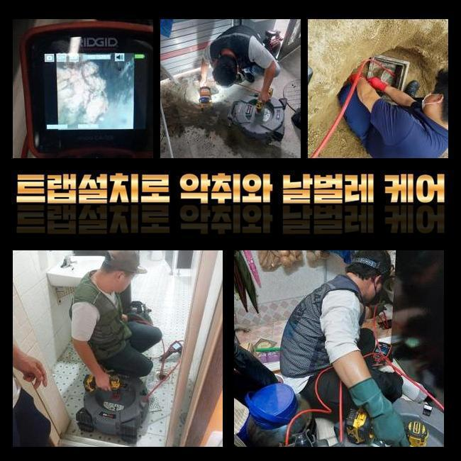
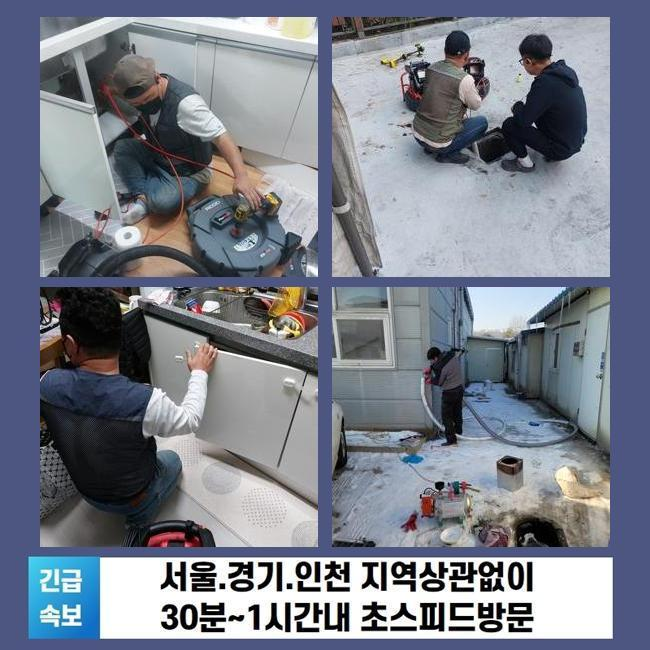
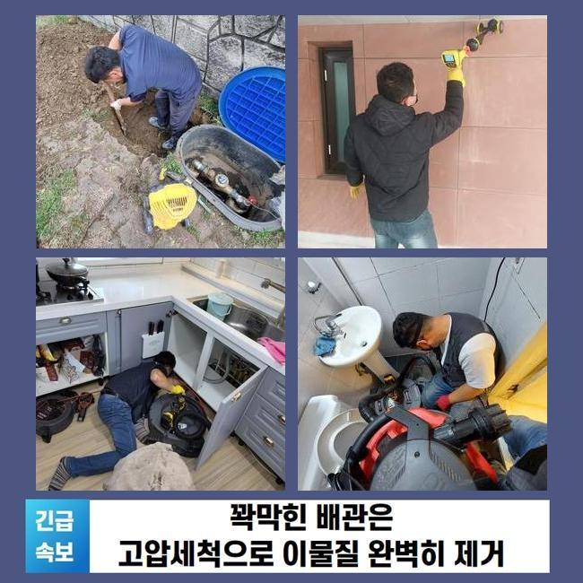
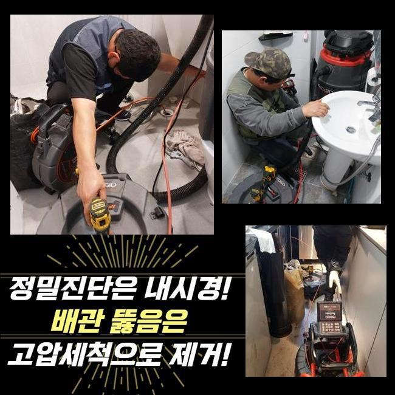
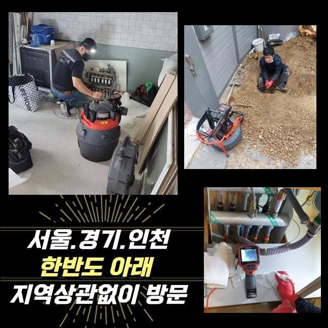
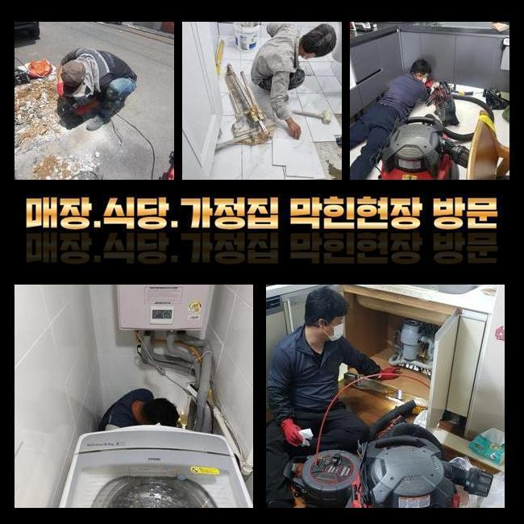

🏠 서초구 서초동세탁실뚫음 염곡동 하수관고압세척 부속수리
용인시 처인구 고압세척 전문 시공 후기

📋 작업 개요
- 위치: 용인시 처인구, 수원시 영통구, 화성시 동탄
- 서비스 유형: 고압세척, 내시경점검
- 작업 일시:
- 업체명: 하수구수사대 (010-5615-2118)
🔍 문제 상황
서초구 서초동세탁실뚫음 염곡동 하수관고압세척 부속수리
일상을 영위하며 쓰는 배수되는 양들을 확인해본 적이 있으실까요?
수도를 배출하다보면 관련한 증상들도 발생됩니다
혹여 여름이 찾아오면 보건성과 악취로 세척을 의뢰하는 경우가 늘어나요
전문적으로 세척해주는 단계가 필요하시다면 설명드리는 내용들을 꼼꼼하게 살펴보시면 되겠습니다
주거지에서 욕실 배관이 정체되는 증세가 발생되었다는 연락을 받게 되었습니다
욕실로 말씀드리자면 계속해서 이용하고 있는 곳이라 통수에 문제가 야기되면 눈 앞이 캄캄해지죠
위와같은 불편들을 다 잡기 위하여 최대한 빨리 스케줄을 잡고 달려가게 되었습니다
방문 즉시 배수가 안되는 화장실쪽의 증세를 점검해보았죠
바닥부분의 하수도로 하수가 답답하게 배수되는 오류를 보였는데요
바닥쪽의 트렌치들을 거친 뒤 원인들을 파악할 목적으로 트렌치 쪽으로 내시경을 투입시켰어요

🔎 원인 분석
💡 전문가 진단: 정밀 진단 장비를 사용하여 슬러지의 고착 여부를 판명하고 타격/세척 작업을 실시했습니다.
그 다음 석션기기를 사용해서 주변으로 배출안된 물들을 강한 압력으로서 수습했죠
내시경기기를 써서 이물의 형태와 잔해물이 막혀버린 스팟을 체크했죠
하수가 제대로 안빠지면 벽쪽에도 이물질이 쌓여버립니다
부속품의 부분들에도 잔해가 누적된 상황이였어요
굳게 퇴적된 이물을 제거시키기 위해서 정확한 진단을 거치지 않고서는 관련 기계를 사용하면 안되겠습니다
힘만을 이용해 슬러지들을 없애줄 시에는 하수관에 균열을 입히게 될 수 있겠습니다
굳은 석회뭉치를 녹여내는 제거약품을 통해서 수월하게 했는데요
위와같이 약품처리의 방식들로 녹인 뒤 장치들로 제거하기위해 현재의 과정들을 이행하는게 좋습니다
먼저 약을 하수관으로 부은 뒤 거품들이 일어나게되는 상황을 주시했죠
벽라인에도 축적된 석회들이 약품들로 화학거품들이 나타나는 모습이에요
초입부분까지도 버블들이 올라오게되며 단단한 석회들이 중화된 상태를 확인하게 되었어요
흡착된 정도를 일단락시켜놓고 체크해보고자 내시경기기로 들여다보았죠

🔧 작업 과정
하수도엔 중화된 석회와 머리카락뭉치가 관찰되었어요
트랩부품이 풀어져있어 일부 머리카락뭉치가 여과과정 없이 배관으로 배출되었어요
이러한 사태를 미리 예방하려면 하수 허용량과 일맥상통하는 거름망들을 써줘야하죠
내부에 퇴적된 슬러지를 청소하기 위하여 이러한기기를 투입시켰어요
이러한장치는 헤드부에 사슬들이 달려있는 긴 모습을 한 기기입니다
체인들을 사용하여 덩어리들을 분쇄하거나 하수관을 뚫는 장비라고 보시면 됩니다
배수관 깊이 머리카락뭉치가 있어도 노커부분들을 사용하여 꺼낼 수 있죠
이러한 작업들을 통해 고착물들을 사라지게끔 하고 잔재들도 제거시켜 청소시켰어요
하수관의 심부도 구석구석 청소시켜야했기에 작업소요시간들이 꽤 필요한 과정이였죠
지속적으로 물들을 흘려보내 부유하는 잔해물들이 배출되게 도와줬죠
갈려진 하수와 잔재는 석션을 써서 흡입하여 청소를 해주었습니다
장비들을 스위칭하고 반복적으로 청소를 할 생각이였죠
어느정도 마무리되었으면 체크해보고자 카메라를 이용해 결과를 보았습니다
청소를 시작하기 전 문제들은 자취를 감췄고 석회와 이물이 없어진 상태였어요
해당 과정을 실시하고 끝으로 통수테스트도 진행했습니다
내시경을 꺼내어 심층부까지 진단해봤죠
해당 과정은 배수관으로 상당 용량의 수도를 쏟아내는 과정입니다
느리다거나 역류없이 원활히 배출되는 것을 관찰할 수 있었어요
바닥쪽도 마찬가지로 통수검열을 거쳐 역류되는지 진단해보았어요


✅ 작업 완료
물빠짐을 지켜보니 답답한 기색 없이 통수되는걸 끝으로 확인했습니다
석션장치에 걸러지게된 이물질도 모두 청소를 해주었습니다
배수관에 이렇듯 대량의 잔해가 있던 탓에 통수오류가 드러난거에요
제거시킨 이물들은 준비해놓은 일반쓰레기에 버린 후 모든 이같은 절차를 끝맺었습니다
배수장애 시정을 고려하고 계실 땐 안정적인 세척을 이행하고 있는 저희들에게 연락주시면됩니다



⚠️ 하수구 배관 막힘 예방 및 관리 가이드
- ✅ 머리카락, 비닐, 물티슈 등 물에 분해되지 않는 이물질은 절대 흘려보내지 마세요.
- ✅ 기름기 많은 식기는 설거지 전 키친타올로 먼저 기름때를 닦아내세요.
- ✅ 주기적으로 배수구에 뜨거운 물을 가득 부어주어 유지방 고착을 방지하세요.
- ✅ 작업 후 1년 이내 재발 시 무상 A/S 보증 서비스를 제공합니다.
💡 핵심 정리
- 확실한 장비 작업(내시경 점검 및 샤프트 스케일링)으로 원인을 뿌리 뽑습니다.
- 작업 후 1년 이내에 동일한 부위 재발 시 100% 무상 A/S 서비스를 보장합니다.
- 서울 · 경기 · 인천 전 지역에 24시간 언제든 긴급 출동할 수 있도록 항시 대기 중입니다.
❓ 자주 묻는 질문 (FAQ)
🚨 용인시 처인구 고압세척 문제로 고민이신가요?
정확한 원인 진단과 확실한 시공으로 재발 없는 해결을 약속드립니다.
24시간 긴급 출동 | 서울 · 경기 · 인천 전지역 | 1년 내 재발 시 무상 A/S